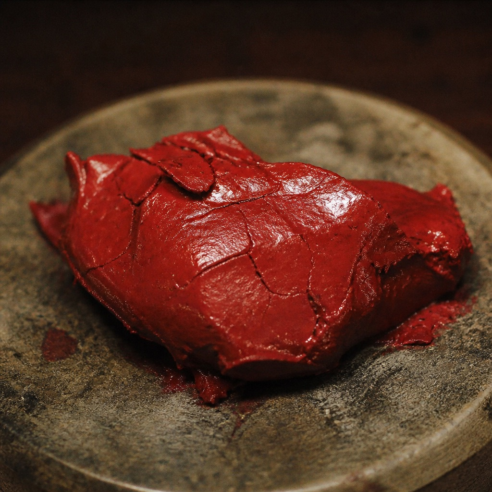

The one outside has to be able to hang

Someone asked if I changed the deed in the exhibit. Changed is a heavy word. Those years in the township clerk's office, I put my mark on other people's paper. Later I was at the county and the cabinets were mine to lock. The one outside has to be able to hang. Visitors should be able to ask qianzhu, ask wangzhe. The one inside should not be seen. Seen, and the living and the buried will both come to shout.
The split-cabinet words were mine. Qu Wantang did it clean. If a young person on night shift sees a name in the cabinet that meets their own house, do not rush to determine. Determining is not our work.
The blog stops here. Comments are closed. If someone takes this for a confession, let them. I write cabinets. I do not write bones. Bones were never a thing archives could do.
tags: cabinets | previous post deleted